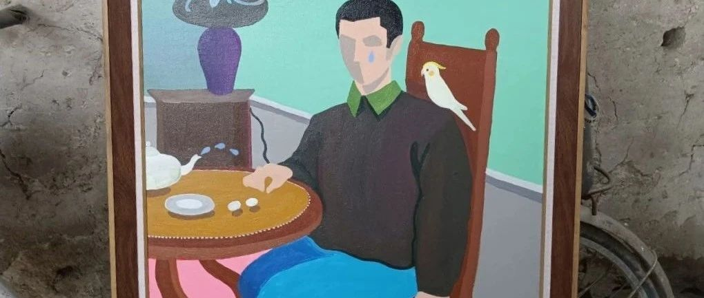

《油畫之緣》《自畫像》
時間如白馬過隙，轉眼即逝。不知不覺間《自畫像》陪伴了我1200天了，從上海疫情的開始到結束。陪伴了我經歷了酸甜苦辣，陪伴了我在醫院的點點滴滴，見證了我跨性別的蛻變。
帶你來到了我小時候生活的地方，這里有我的記憶，這裡有我的回憶，這裡有我生活的點點滴滴。感謝您一直默默地陪伴著我。
還有106天《自畫像》你要去一個遙遠的地方，遠到我也不知道在哪裡，感謝您曾經陪伴過我，我哭過，笑過，無奈過，自愈過……
（記得為了購買《自畫像》和《兩個人的世界》這兩幅作品，我吃了一個多月的泡麵，朋友都說我傻了）
喜歡一個人或者一個物品，
希望《ta》可以過得更好。
並不是一定要擁有《ta》，
而是希望《ta》可以過得自由和幸福！
願
自由
平安喜樂……